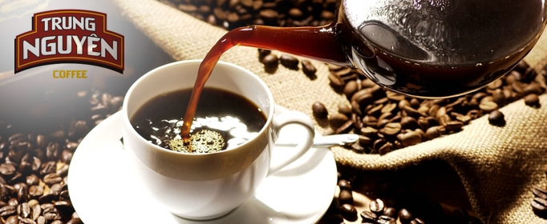

Vietnamese Sugarcane Juice
Sugarcane juice is a refreshing drink made from sugarcane by pressing the sugarcane plant to extract the juice. This drink is popular in Asia, Southeast Asia, and Latin America.
Vietnamese Coffee
Trung Nguyen Coffee is the No. 1 Brand in Vietnam with the largest number of coffee consumers. There are 11 million/17 million Vietnamese households buying Trung Nguyen coffee products.
Vietnamese Tea
Vietnamese people are always proud of the elaborate process of seasoning, brewing and enjoying tea. Vietnamese tea can be divided into three types: scented tea, black tea and fresh tea.